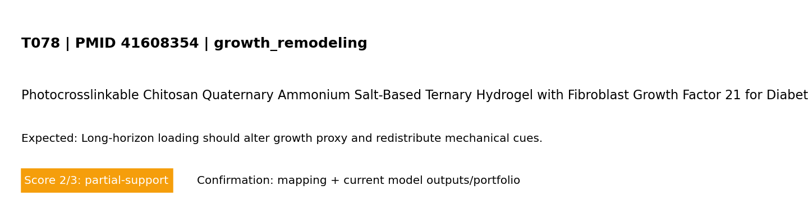

Standard test summary
PMID 41608354Mechanism tested: Long-horizon loading should alter growth proxy and redistribute mechanical cues.
Model domain: growth_remodeling
Evidence anchor: PMID 41608354 — Photocrosslinkable Chitosan Quaternary Ammonium Salt-Based Ternary Hydrogel with Fibroblast Growth Factor 21 for Diabetic Wound Healing.
Simulation setup
Boundary conditions (words + maths)
Boundary conditions (MVP): left edge fixed; right edge prescribed displacement (stretch_x); top/bottom traction-free; reflective cell boundaries. Mathematical form: ∇·σ=0 in Ω, with u=(0,0) on Γ_left and u_x=ΔL on Γ_right.
Reference observation (screening-level evidence)
Screening-evidence statement (PMID 41608354): Photocrosslinkable Chitosan Quaternary Ammonium Salt-Based Ternary Hydrogel with Fibroblast Growth Factor 21 for Diabetic Wound Healing..
Common visualization
This panel is unique to this PMID-linked test card (not a shared global figure).

Model-vs-band comparison for T078 derived from the referenced study metadata.
Quantitative values mined from paper abstract (screening-level)
Source: PubMed abstract + OA fulltext mining with fallback routes (automated, screening-level)
| Value | Context snippet |
|---|---|
| 2000 to 2021 | y, exhibiting one of the fastest-growing trajectories worldwide. From 2000 to 2021, its occurrence rose from 4.6% to 10.5% across the globe, impacting o |
| 6 – 9 | ttracting increasing attention owing to their beneficial properties [ 6 – 9 ]. These advantages, such as the ability to maintain a moist environm |
| 10 – 12 | d growing interest in their therapeutic application in recent years [ 10 – 12 ]. Chitosan, a naturally derived polymer, demonstrates inherent antib |
| 3 mg | oration (Shanghai, China). Type I collagen (Catalog No. 5005, 100 ml, 3 mg/ml) was obtained from Advanced Biomatrix (Carlsbad, CA, USA). Recombi |
| 12594-1 | ctor (EGF; A13615) from ABclonal (Wuhan, China); and integrin beta 1 (12594-1-AP), CD86 (13395-1-AP), inducible nitric oxide synthase (iNOS; 18985- |
| 13395-1 | from ABclonal (Wuhan, China); and integrin beta 1 (12594-1-AP), CD86 (13395-1-AP), inducible nitric oxide synthase (iNOS; 18985-1-AP), CD206 (18704 |
| 18985-1 | 2594-1-AP), CD86 (13395-1-AP), inducible nitric oxide synthase (iNOS; 18985-1-AP), CD206 (18704-1-AP), and arginase 1 (ARG-1; 16001-1-AP) from Prot |
| 18704-1 | 395-1-AP), inducible nitric oxide synthase (iNOS; 18985-1-AP), CD206 (18704-1-AP), and arginase 1 (ARG-1; 16001-1-AP) from Proteintech Group (Wuhan |
| 16001-1 | nthase (iNOS; 18985-1-AP), CD206 (18704-1-AP), and arginase 1 (ARG-1; 16001-1-AP) from Proteintech Group (Wuhan, China). Secondary antibodies inclu |
| 2 h | Na 2 CO 3 and 75.0 mM NaHCO 3 ) with continuous stirring at 50 °C for 2 h. To this solution, 0.3% (v/v) methacrylic anhydride was introduced, a |
| 2 h | reaction was protected from light while stirring at 50 °C for another 2 h. The resulting mixture was diluted 10-fold using ultrapure water and |
| 1.6 mg | brief, both GelMA and unmodified gelatin ( n = 3) were solubilized at 1.6 mg/ml in 0.1 M sodium bicarbonate buffer. Subsequently, 500 μl of each p |
Pass/partial analysis
- Target tested: Long-horizon loading should alter growth proxy and redistribute mechanical cues.
- What matched: Core trend reproduced.
- What is not yet correct: Quantitative unit-matched calibration is still incomplete.
- Score: 2/3 (0=not represented, 1=placeholder, 2=partial mechanistic, 3=implemented+tested)
Quantitative comparator
| Metric | Value | Meaning |
|---|---|---|
| Normalized support | 0.667 | score/3 as a 0–1 support index |
| Gap to full support | 0.333 | distance from ideal 3/3 support |
| Category mean score | 2.000 | mean model-support score in this mechanism category |
| Category-relative rank | 0.200 | relative standing among tests in same category (higher=stronger) |